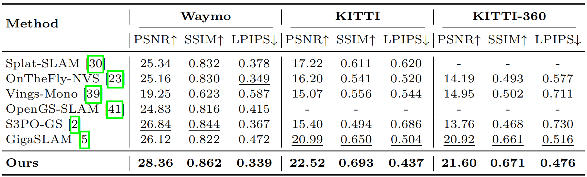
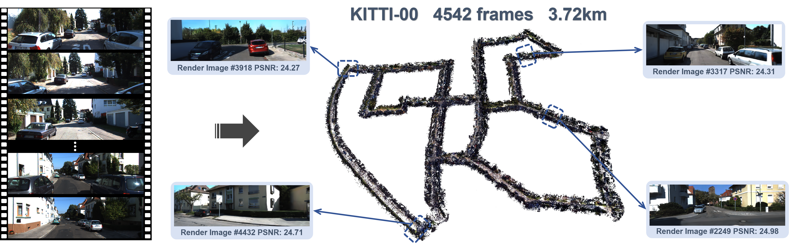
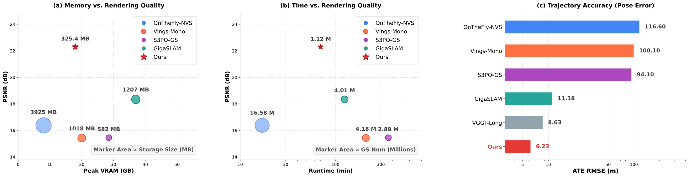
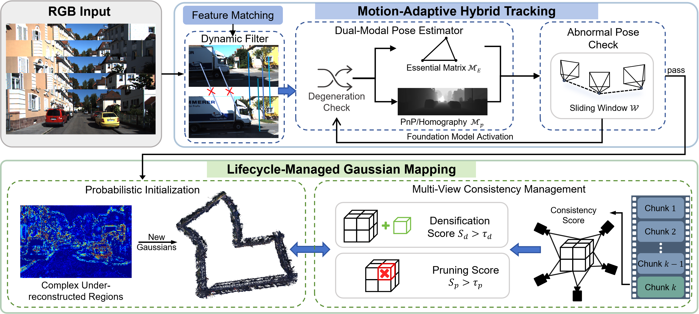
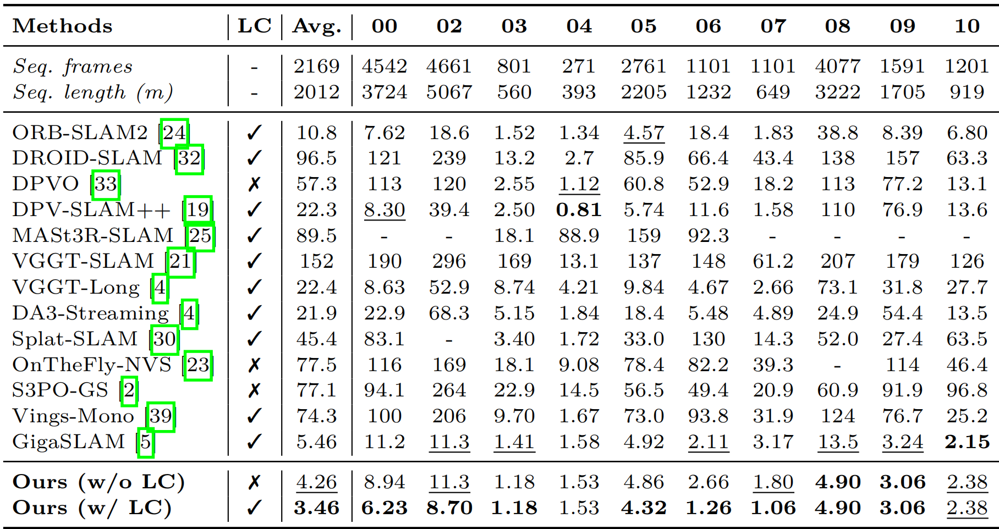
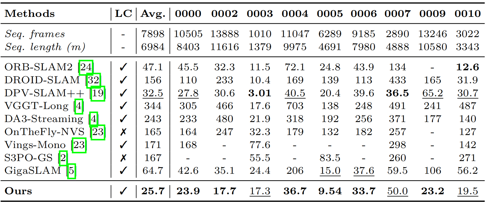
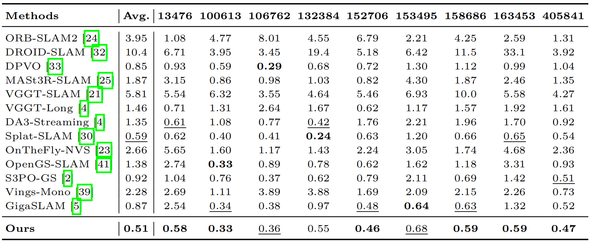
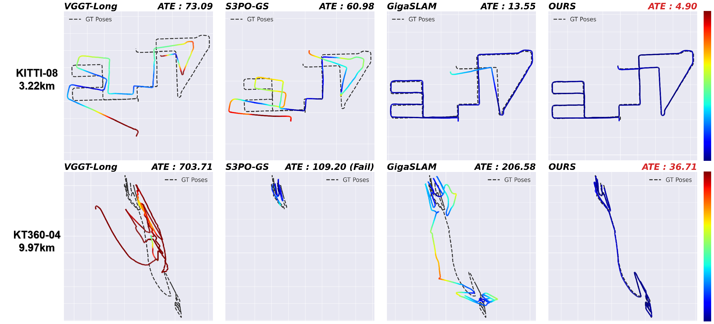
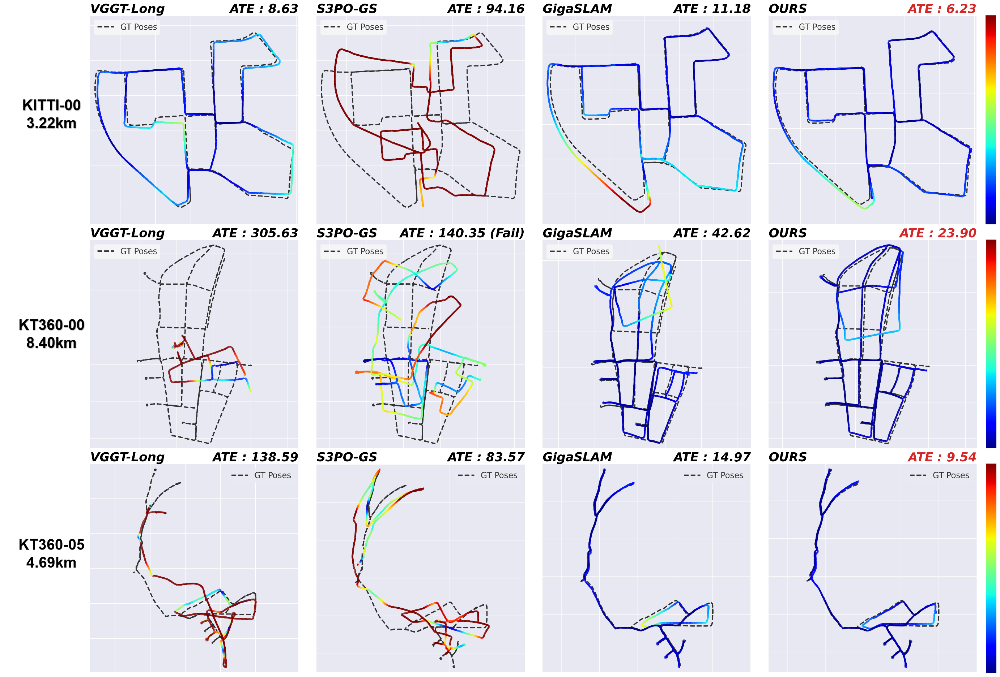
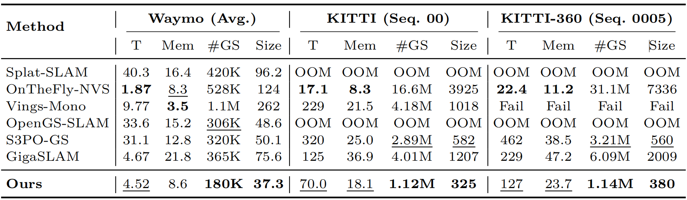

Rendering Results
Our method preserves superior structural and textural details in both near-field and distant regions, whereas other baselines struggle with noticeable blurring and artifacts.



KiloGS-SLAM achieves robust pose tracking and precise scene reconstruction in kilometer-scale outdoor environments using only monocular RGB input, enabling high-fidelity novel view synthesis.

Our method strikes the optimal balance between rendering quality, runtime, and memory overhead, while achieving the lowest camera tracking error.
Scaling monocular 3D Gaussian Splatting (3DGS) SLAM to kilometer-level outdoor environments poses two tightly coupled challenges: fragile long-term pose tracking and excessive memory overhead during large-scale mapping. In this paper, we propose KiloGS-SLAM, a highly efficient and robust monocular 3DGS-SLAM system that jointly addresses both bottlenecks. Since high-fidelity scene reconstruction fundamentally relies on drift-free camera poses, we first introduce a motion-adaptive hybrid tracking module. This module features a condition-triggered three-tier solving pipeline. It dynamically switches between Essential matrix and PnP models to handle geometric degeneracies. An on-demand foundation model can also be activated to rescue the trajectory from catastrophic drift. To ensure the system can sustain these long trajectories without memory exhaustion, we subsequently design a lifecycle-managed Gaussian mapping strategy. By integrating probabilistic initialization with chunk-based multi-view densification and pruning, this full-pipeline optimization effectively reduces primitive redundancy while preserving high-frequency details. Together, the robust tracking guarantees the geometric foundation required for accurate mapping, while the memory-efficient lifecycle-managed mapping enables large-scale operation. Extensive experiments across three challenging outdoor datasets demonstrate that our approach achieves state-of-the-art tracking accuracy and rendering quality, successfully scaling to sequences of over 10,000 frames on a single GPU.
Input RGB frames first undergo sparse matching and dynamic filtering once entering the tracking module. A dual-modal pose estimator dynamically switches between Essential and PnP matrices to handle degeneracies. The estimation is verified against a sliding-window motion prior, triggering an on-demand foundation model dense matching upon failure. Valid poses proceed to the Mapping module. New Gaussians are probabilistically initialized strictly in complex, under-reconstructed regions. During map optimization, chunk-based multi-view consistency scores are evaluated to guide continuous densification and pruning.

Our method maintains robust pose estimation and global consistency across long-term outdoor sequences, whereas other baselines inevitably suffer from significant drift in localized challenging segments.





Our method preserves superior structural and textural details in both near-field and distant regions, whereas other baselines struggle with noticeable blurring and artifacts.


T: Runtime (min); Mem: Peak VRAM (GB); Size: Map Storage (MB); #GS: Number of Gaussians.
@article{yu2026robust,
title={Robust and Efficient Monocular 3D Gaussian SLAM for Kilometer-Scale Outdoor Scenes},
author={Yu, Sicheng and Shen, Dongxu and Zhao, Beizhen and Ding, Guanzhi and Wang, Hao},
journal={arXiv preprint arXiv:2606.30436},
year={2026}
}